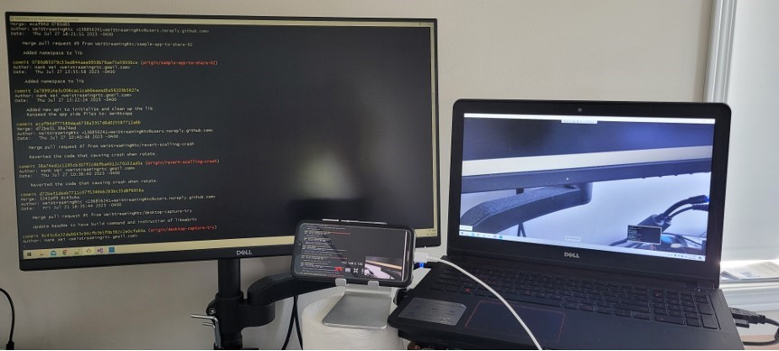

This is a sample app to demostrate native WebRtc client library for Windows from WeiStreaming: WeiStreaming.WeiRtc.Native.lib, a working WinRtc.
It can establish a webrtc call with Google AppRtc Android demo app.
It can stream from camera or desktop capturer.
It has a built-in simple signaling server using direct TCP. When started, it runs as a TCP server listening at port 8888.
Download and build Google AppRtc Android demo app: https://github.com/njovy/AppRTCDemo
You can also build it from webrtc open source project: https://chromium.googlesource.com/external/webrtc/stable/talk/+/33ff0831ca67eeb4e33cfb4e0a0b68c6cc631ccc/examples/android/
You need to apply patches: android-weirtc-patch.patch. Copy android-weirtc-patch.patch to the root of Android AppRtc demo app code, then run following command.
git am android-weirtc-patch.patch
//build with following command
./gradlew app:assembleDebug --exclude-task app:compileDebugJavaWithJavac
//install
adb install "D:\git\WeiStreaming\android\AppRTCDemo\app\build\outputs\apk\debug\app-debug.apk"
Install on your device, and when started, type in your windows box’s IP address that is running this demo app.
Go to Settings to give this app permission for camera and mic.
_sample->AddVideoTrack(pipCanvas);
//Uncomment this line below and comment out the line above to test desktop capture.
//_sample->AddDesktopTrack(*_screenPipCanvas);
Following pic is showing that windows side is doing screen share, android side is doing back facing camera. 
With solid 5 years track record of constructing intricate WebRTC end-to-end video conferencing platforms, our mission is to provide easy to use WebRtc native SDKs for all popular platforms. So any native app can add WebRtc video conferencing features with minum cost.
weistreamingrtc@gmail.com